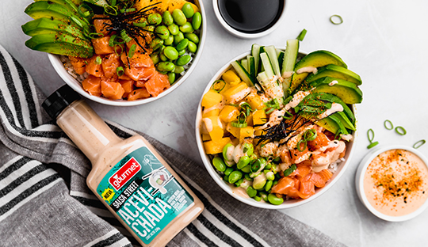

Gohan

¿Cómo hacer Gohan de Salmón con Salsa Acevichada?
Ingredientes
Para el arroz pegajoso:
- 1 ½ de taza arroz
- 1 ¾ de taza agua
Para el gohan:
- 250 gr de edamame con vaina
- 600 gr de salmón sin piel en cubos
- ½ pepino en bastones, sin semillas
- 1 palta en láminas
- 1 cebollín, solo la parte verde, picado finamente
- ½ mango pelado y en cubos
- ½ lámina de Nori, picado en tiras delgadas con tijeras
- Togarashi para servir
- Salsa Acevichada Gourmet
Pasos
Para el arroz pegajoso:
-
Verter el arroz sobre un colador y lavarlo bajo el chorro de agua,
restregando hasta que salga agua cristalina.
-
Poner el arroz y agua de la receta en una olla y hacer hervir a fuego
medio-alto. Desde que hierva, reducir el fuego a bajo, tapar y dejar
cocinar por 15min.
- Destapar y dejar enfriar por completo antes de servir.
Para el gohan:
-
Hervir agua con abundante sal en una olla pequeña y agregar el edamame.
Cocinar por 5 minutos. Retirar, pelar y descartar las vainas. Enfriar
antes de servir.
- Armar los gohan con todos los ingredientes.
- Servir con salsa acevichada y togarashi.